Démonstrateur
Interaction - Médiation scientifique
Y.Spot, CEA Grenoble : Conception d’un démonstrateur scientifique
Arduino, RFID, After Effects
Le but était de repenser le démonstrateur totémique de l'institut LITEN (innovations dans le domaine de l'énergie). Celui-ci est utilisé comme support de présentation pour les collaborateurs du CEA. Par groupe de 4, l’objectif était de représenter un système complexe, les flux énergétiques.
Notre maquette phygitale est basée sur des combinaisons de scénarios. On a une collection de "cartes" tangibles qui peuvent être combinées, représentant les acteurs du domaine de l’énergie. Sur un écran on a d’abord une introduction qui présente la matrice simplifiée. Ensuite lorsqu’on combine 2 cartes, on affiche les technologies développées par le LITEN par rapport à ces deux acteurs.
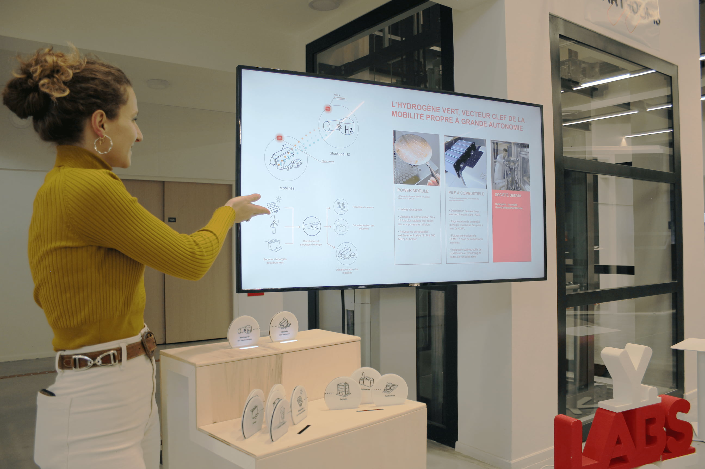
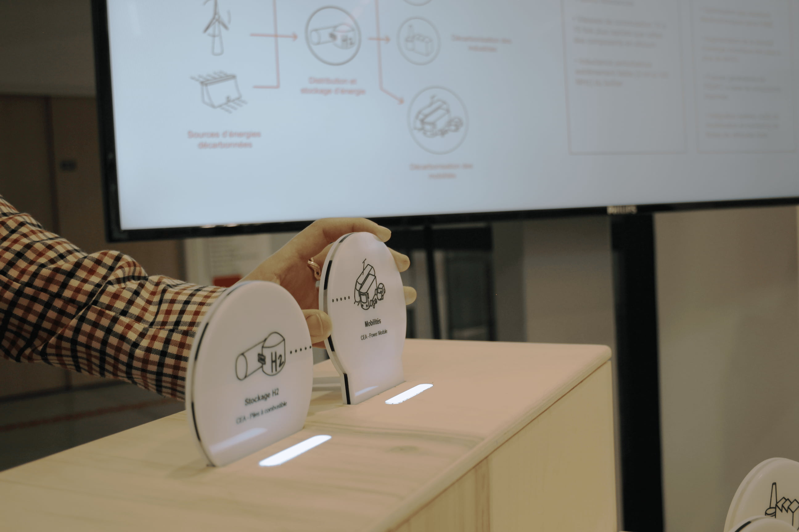
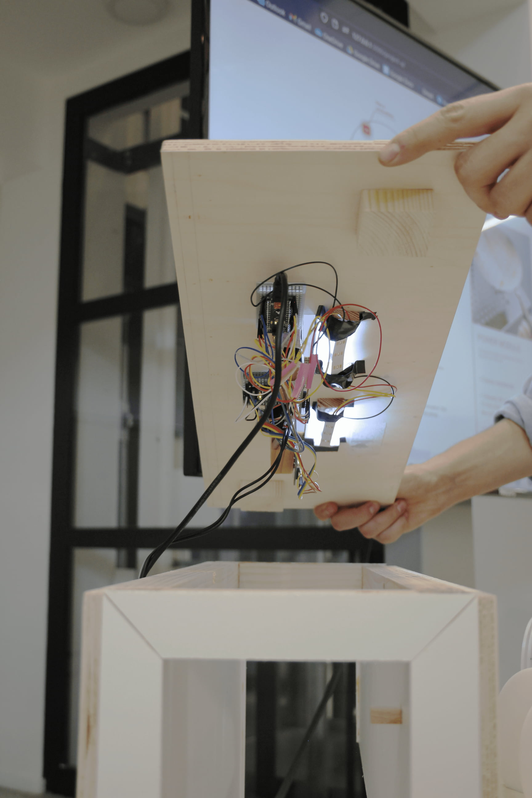
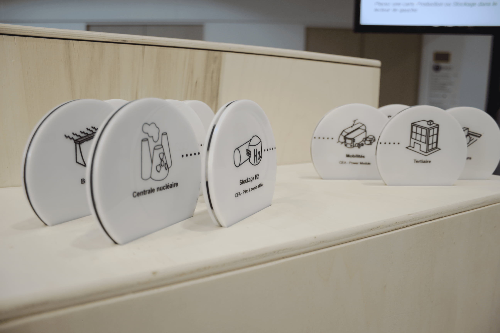
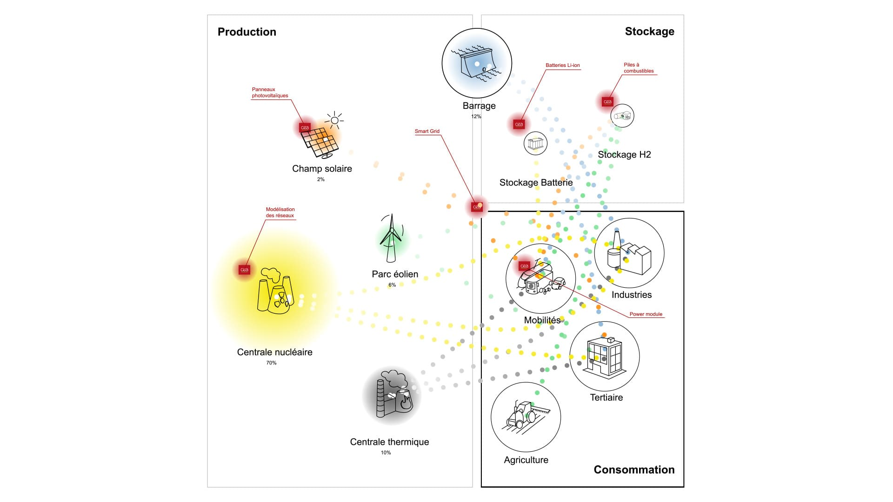
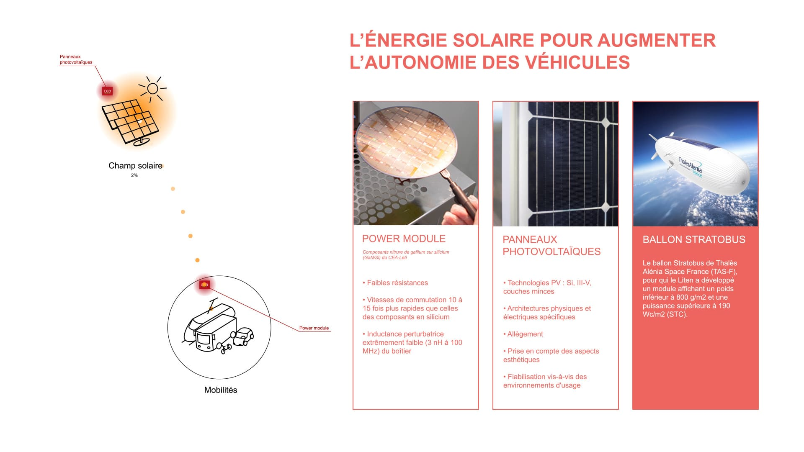
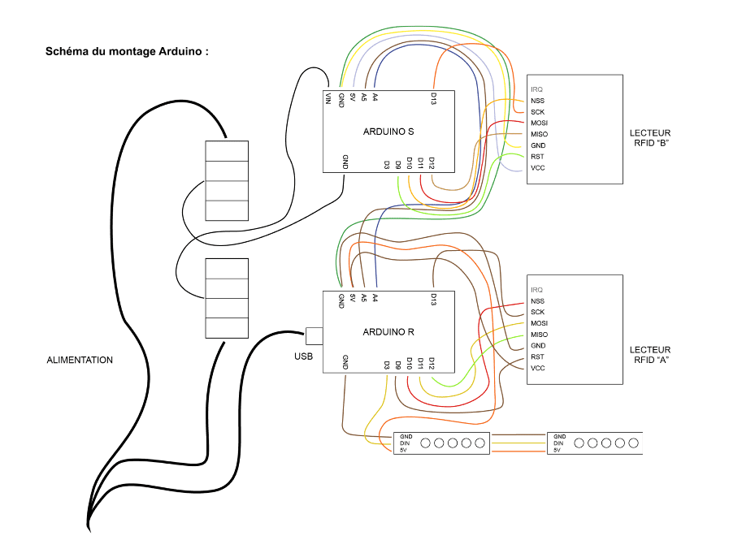
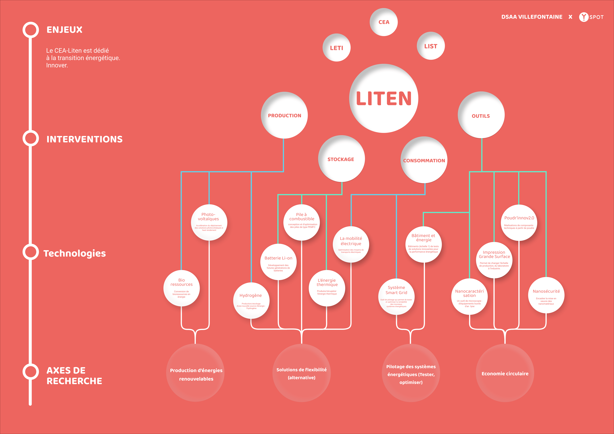
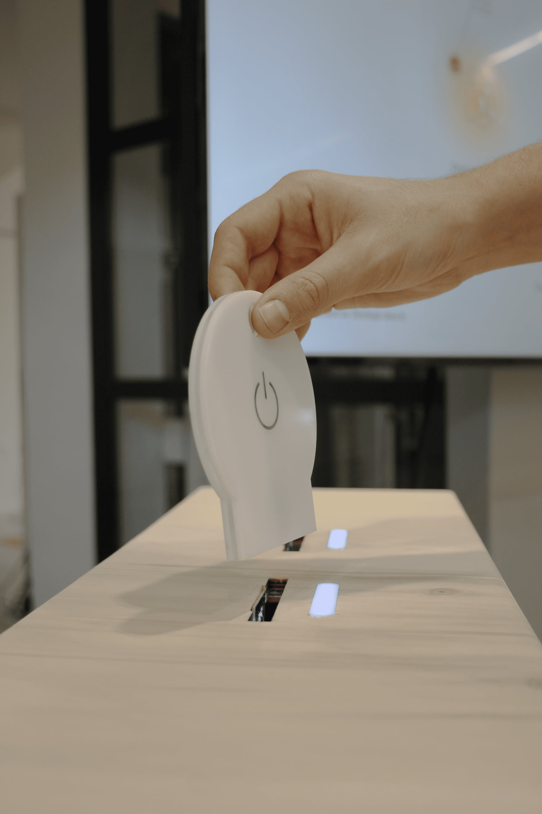
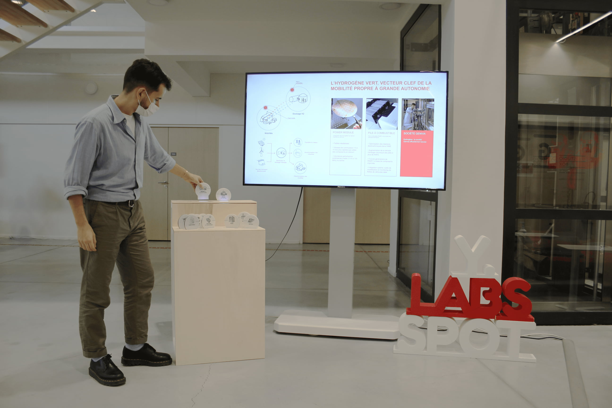
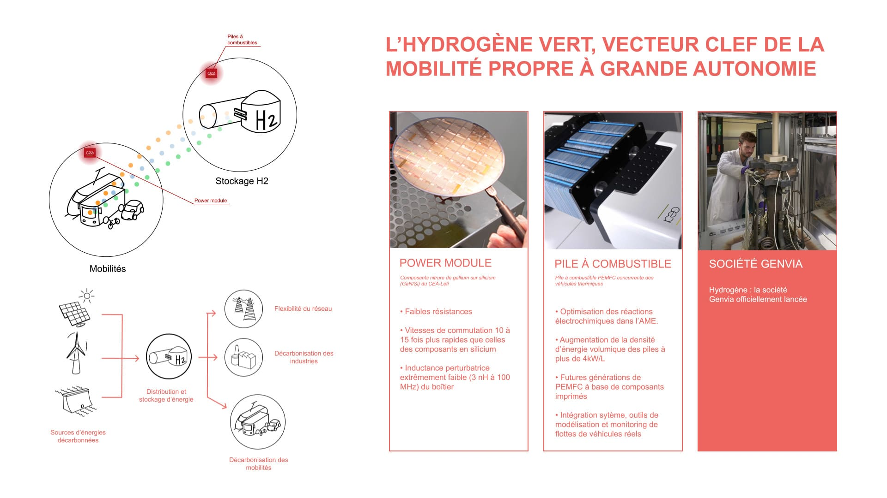
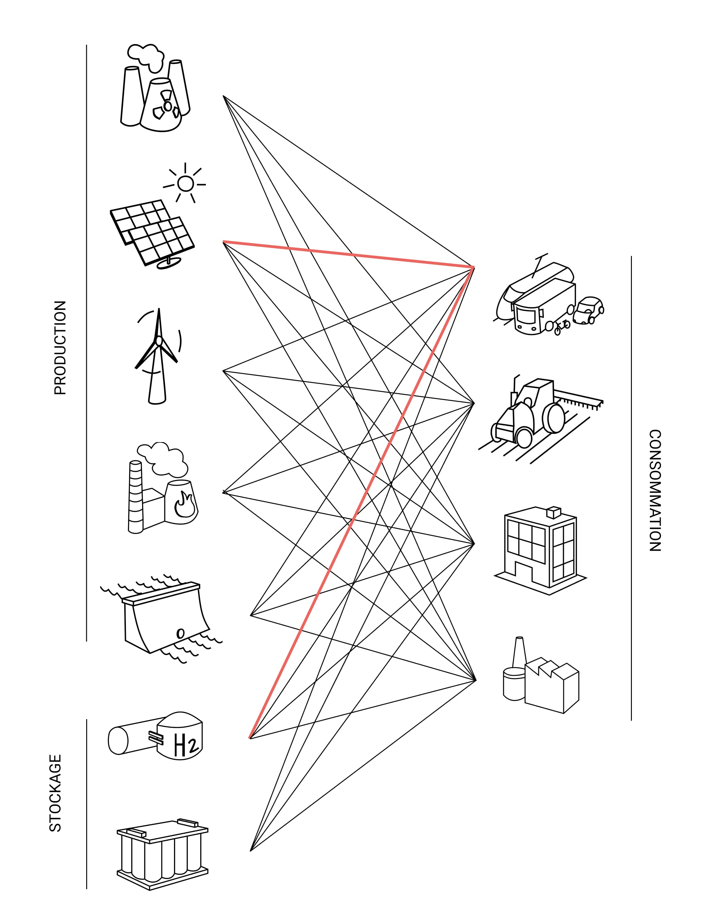
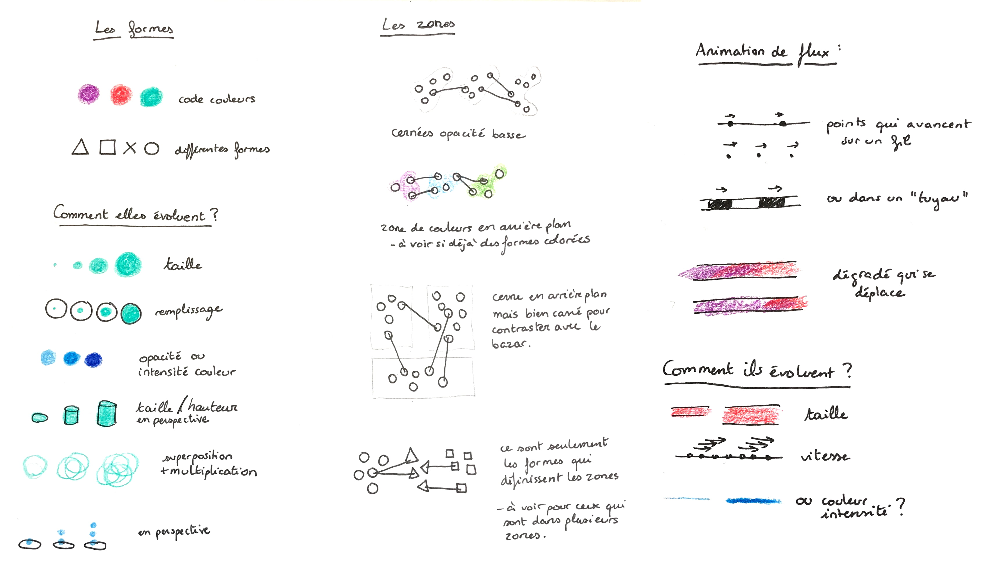